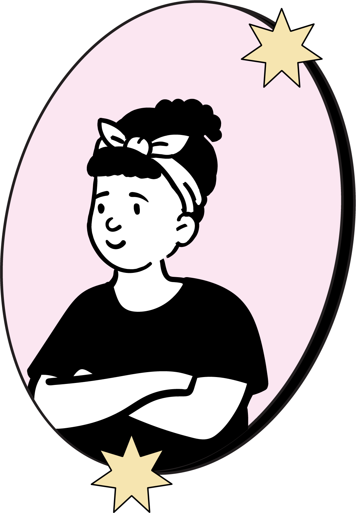
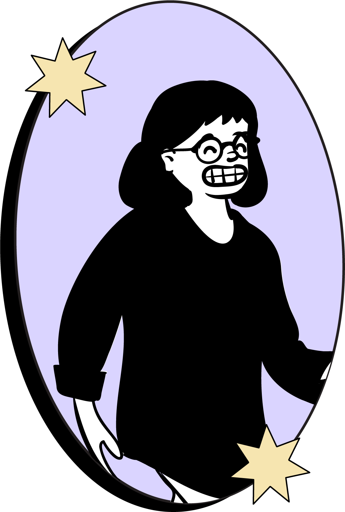

Actualmente vivimos en una comunidad con mucha desinformación sobre ciertos temas considerados“tabú”relacionados con lasalud femenina,esta página se presenta como portavoz de todas esas mujeres que no se conocen a sí mismas y tienen miedo de hablar sobre sus inquietudes físicas y psicológicas. De esta forma, se puedan sentir seguras ya quién y en dónde acudiren caso de alguna emergencia o situación de salud.
Organización sin fines de lucro creada como proyecto local para acudir a la necesidad actual en el ámbito de la salud femenina en el estado de Sonora.
✦Pósters informativos para ayudarnos entre mujeres a mantenernos informadas.✦
Los riesgos para la salud femenina dependenla etapa de la vida en la que se encuentre la mujer.Las mayores amenazas para la salud de una mujer a menudo pueden prevenirse, por lo que tomar decisiones saludables en cuanto al estilo de vida puede contribuir enormemente a la prevención de enfermedades.
Aunque algunos factores de riesgo para las amenazas para la salud de las muieresno pueden ser eliminados, otros riesgos pueden controlarse y pueden detectarse signos tempranos. Las mujeres deben educarse sobre los mayores riesgos para su salud y entender que muchas enfermedades crónicas pueden prevenirse.
Haz una pequeña donación para que mujeres de todas las edades en comunidades alrededor dnel estado de Sonora, obtengan información relevante e importante que les ayude en su día a día y así, obtengan una mejor noción acerca de la salud femenina. Todo lo que aportes hoy, será invertido en conferencias impartidas por el Instituto Sonorense para la Mujer.
Compártenos tu correo: